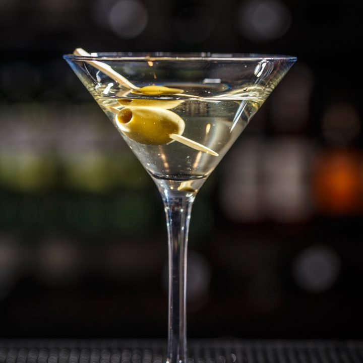

Vodka Martini

Vodka replaces gin in this variation of the classic martini.
Ingredients:
- 3 fluid ounces vodka
- 1 fluid ounce dry vermouth
- 1 cup ice cubes
- 3 olives
Steps:
- Combine vodka and dry vermouth in a cocktail mixing glass.
- Fill with ice and stir until chilled.
- Strain into a chilled martini glass.
- Garnish with three olives on a toothpick.